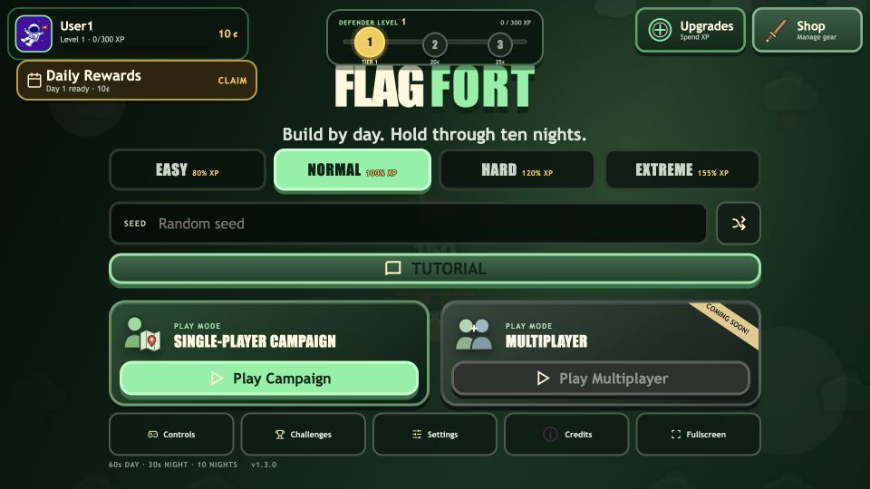
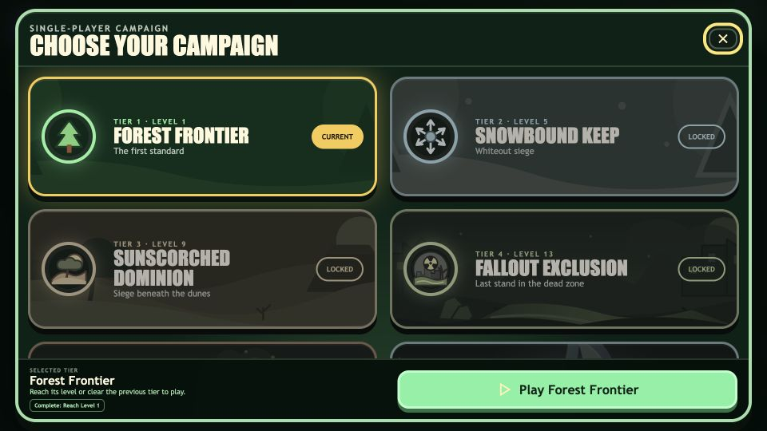

Both gates required
A player could clear a campaign and still be blocked from the next one while grinding levels.
Level requirement must be metPrevious campaign must also be cleared
FLAGFORT IMPLEMENTATION REVIEW
Players can now enter the next campaign after proving mastery of the previous tier, while level-based coin rewards remain protected by their exact XP thresholds.
A player could clear a campaign and still be blocked from the next one while grinding levels.
Skill progression and XP progression are equally valid ways to reach the next campaign.


At Level 1, only valid levels are shown, so the window begins with Levels 1, 2, and 3 rather than inventing Levels 0 and -1. From Level 3 onward it shows the requested five-level window.